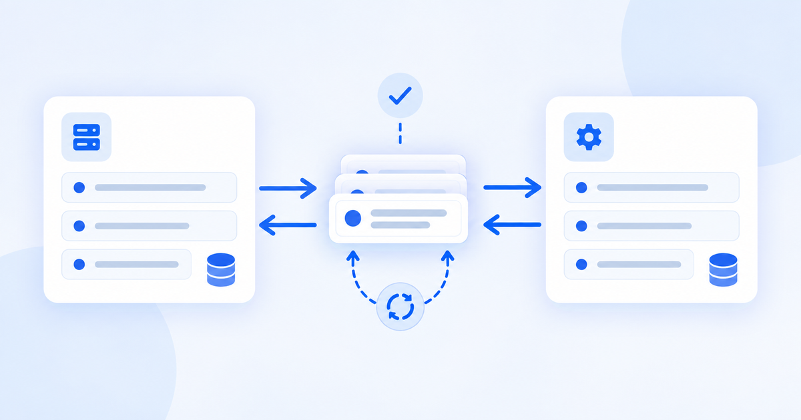
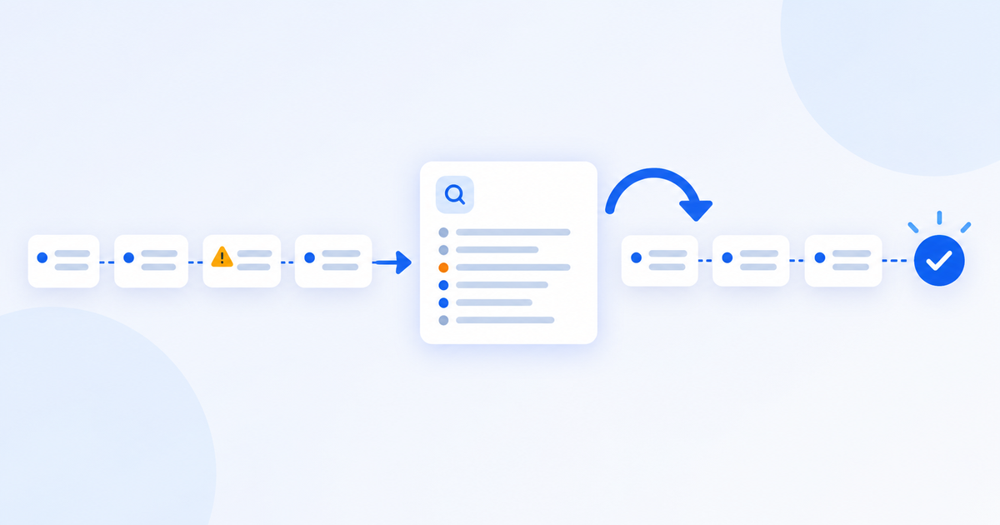

Архитектура
Архитектура интеграции Odoo: данные, очереди и восстановление после ошибок
Как определить владельца данных, направления обмена, идентификаторы и поведение при ошибках до начала разработки API.
Читать материал →Odoo knowledge base
Разбираем архитектуру интеграций, эксплуатационные ошибки и технические решения на основе документации и подтверждённого проектного опыта. Материалы отделяют факты о платформе, опыт конкретных проектов и инженерные рекомендации автора.
Integrations & Architecture
Первый кластер посвящён границам систем, очередям, восстановлению после ошибок и двум разным способам использовать Telegram рядом с Odoo.

Архитектура
Как определить владельца данных, направления обмена, идентификаторы и поведение при ошибках до начала разработки API.
Читать материал →
Эксплуатация
Классификация сбоев, безопасный retry, replay и reconciliation, а также два обезличенных сбоя queue_job/XML-RPC.
Читать материал →Telegram
Сравнение сценария чтения отчётов и операционного сценария на примерах Buildflow и Atkinternal.
Читать материал →Посмотрите, как студия определяет границы данных, ошибки и запуск интеграционного контура.
Услуга интеграции Odoo →В кейсах отдельно отмечены проекты студии и опыт Владислава Червякова во время работы в kt.team.
Перейти к кейсам →